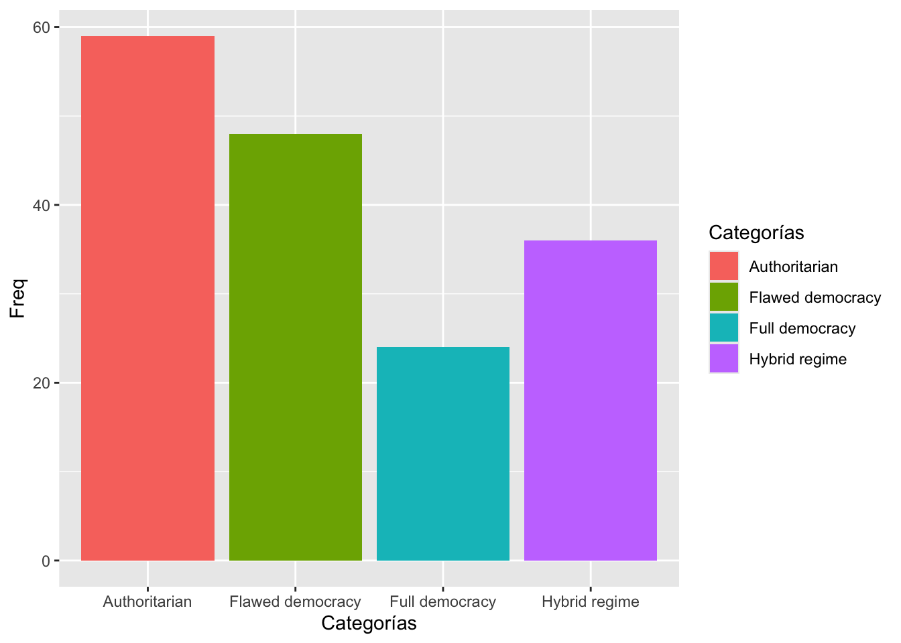
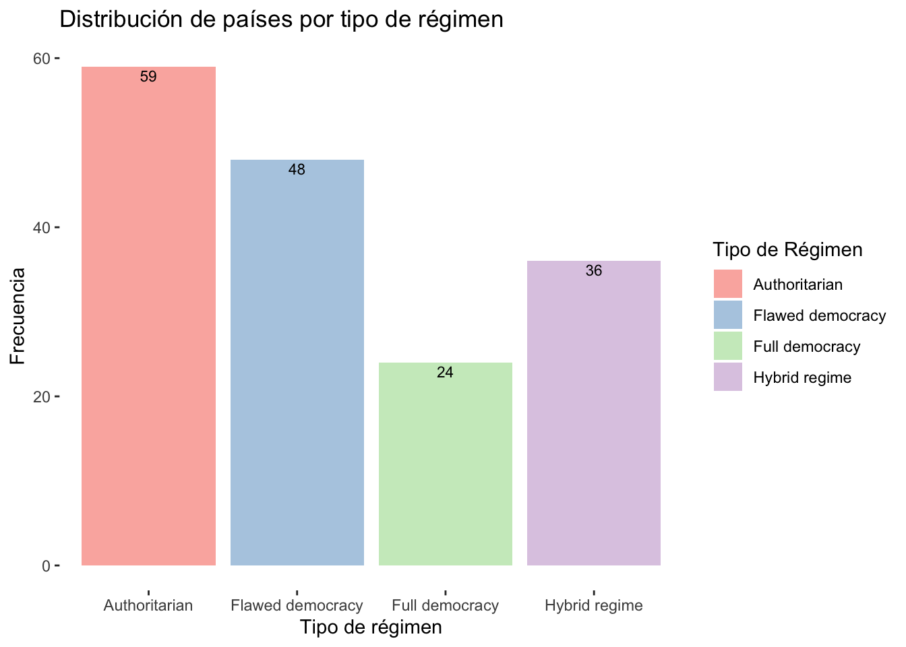
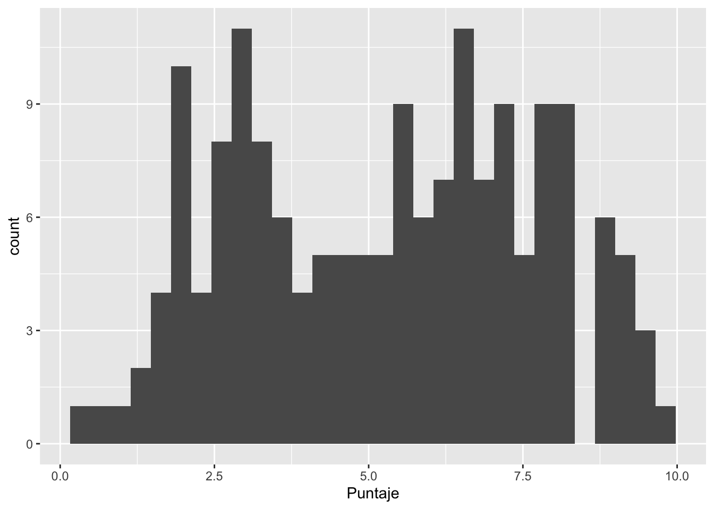
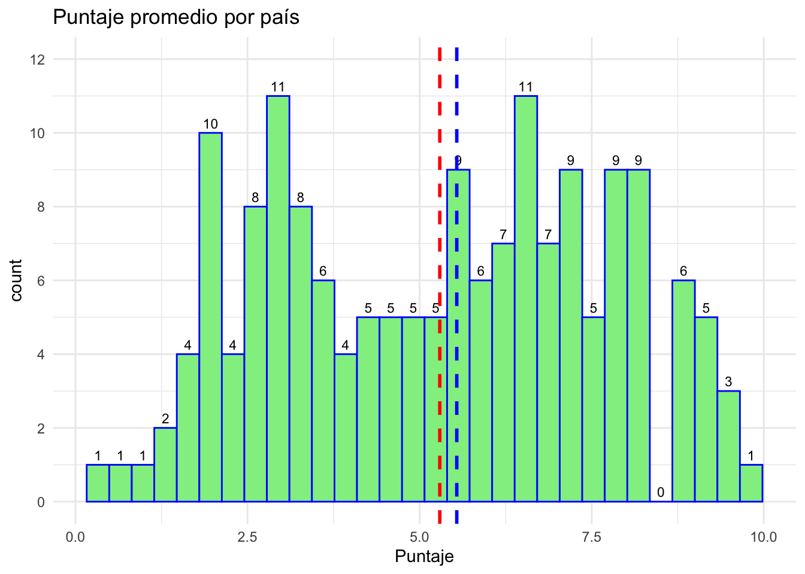

Práctica dirigida 1

FACULTAD DE CIENCIAS SOCIALES - PUCP
Curso: POL 278 - Estadística para el análisis político 1 | Semestre
2024 - 2
1. ¿Qué es R?
R es un lenguaje de programación y un entorno de software libre y de código abierto utilizado para análisis estadístico y visualización de datos. Fue desarrollado por Ross Ihaka y Robert Gentleman en la Universidad de Auckland, Nueva Zelanda, en 1993. Desde entonces, ha sido ampliamente adoptado por la comunidad científica y empresarial como una herramienta esencial para el análisis y la visualización de datos.
R cuenta con una amplia variedad de paquetes y bibliotecas que permiten el análisis estadístico, la minería de datos, el aprendizaje automático, la visualización de datos y la generación de informes. Además, su sintaxis es relativamente sencilla, lo que facilita su aprendizaje y uso para personas con distintos niveles de experiencia en programación, lo cual ha significado su uso en diversos rubros.


3. Conceptos básicos para programar en R
Instalar R
Instalar RStudio
Usando R

3.1. Configurar el directorio de trabajo
R funciona como un entorno temporal de trabajo, lo que quiere decir que el usuario va agregando datos y objetos. Sin embargo, si los análisis no son guardados se deberán repetir las instrucciones para obtener otra vez el resultado. Por esta razón, es preciso configurar una carpeta predeterminada en nuestro ordenador, donde el programa buscará los archivos a ejecutar y guardará los archivos a conservar con cambios.
Para ver nuestro lugar de trabajo actual escribimos el siguiente comando (escriba el código en la consola, ya que si lo ejecuta desde este Rmd, obtendrá el lugar donde se encuentra este archivo):
getwd() #para saber en qué carpeta está el archivo## [1] "/Users/Karina/PracticasPOL278"Si queremos cambiar de directorio de trabajo, nos dirigirnos al menú “Session” > “Set Working Directory” > “Choose Directory”. Esto abrirá una ventana emergente, donde buscaremos la carpeta en la cual vamos a trabajar, la ubicamos y seleccionamos “Open”. Para verificar el cambio volvemos a digitar la función “getwd()” en la consola.
3.2. Sintaxis y objetos en R
El uso de R es bastante intuitivo y sigue un patrón lógico. Está compuesto de códigos y la combinación de estos códigos genera una sintaxis. Asimismo, R guarda la información de nuestras observaciones y variables a través de objetos.
En un sentido global, la estructura general de una sintaxis puede resumirse como sigue: a un objeto dado se le asigna el resultado de una función, que a su vez se ejecuta sobre un conjunto de datos especificado, con una serie de configuraciones particulares. Veamos el siguiente ejemplo ficticio.

Si se lee de izquierda a derecha, la línea de comando puede explicarse como sigue:
Primero se indica un objeto a crear, con el nombre que ustedes definan.
Luego se indica el asignador, que expresa que todo lo que esté a la derecha de la flecha se guardará en el objeto creado a la izquierda. El asignador puede ser “<-” o también “=”, para motivos del curso usaremos este último.
Luego viene la función que en este caso permite leer archivos tipo Microsoft Excel. R trabaja con funciones que están dentro de “paquetes” que la comunidad va desarrollando. Podemos hacer nuestras operaciones con diversas funciones, y no hay una sola forma de hacerlo. Si se trata de funciones que no están predeterminadas en R, debemos instalar el paquete que las contiene con el comando “install.packages()”, y antes de ejecutarla debemos abrir la libreria con el comando “library()”
Luego de la función, se abre un paréntesis que contiene los argumentos: instrucciones que especifican ciertos detalles de lo que queramos que la función realice. Los argumentos pueden escribirse de distintas maneras y va a depender de lo que queramos hacer. En nuestro ejemplo: El primer argumento indica la información a leer, en este caso indica un archivo de tipo Excel (extensión xlsx). El segundo argumento indica la hoja del archivo a leer. El tercer argumento indica qué columnas se leerán de forma específica (en este caso, las primeras diez).
Hagamos un ejemplo:
Vamos a abrir un archivo en R, utilizando la función “import” del paquete “rio”, el cual es un paquete versátil que nos permite importar datos de diversas extensiones (dta, sav, csv, xls, etc.)
Antes que todo, debemos instalar el paquete escribiendo en la
consola: install.packages("rio")
También podemos instalar un paquete haciendo clic en “Tools” en la barra superior” y luego en “Install packages”, se escribe el nombre del paquete a instalar y listo.
library(rio)
data=import("DemocracyIndex2022.xlsx") Utilizamos la función import (importar) que creará un objeto que contenga la base de datos del archivo “DemocracyIndex2022.xlsx” la cual hemos descargado. Podemos verificar la creación del objeto en el environment (ventana derecha superior), debe encontrarse bajo el nombre de data.
Podemos conocer el tipo de objeto que tenemos si usamos el comando class. Se puede aplicar a cualquier objeto o variable dentro de un objeto. Entre paréntesis colocamos el nombre del objeto. En este caso, se trata de un “data frame”, que es el tipo de objeto en R para las bases de datos.
class(data) ## [1] "data.frame"Podemos realizar el mismo ejercicio con una variable en específico. En el lenguaje de base de R, usamos el símbolo $ como sinónimo de pertenencia. Es así que para referirnos a una variable debemos hacerlo indicando primero la base u objeto al que pertenece, el símbolo $, y luego la variable en cuestión (data$variable)
Hagamos el ejercicio con la variable Categorías.
class(data$Categorías)## [1] "character"El anterior comando le pide a R, que indique el tipo de la variable Categorías que pertenece al objeto llamado data.
3.3. El mundo tidyverse
Hay una excepción al uso de la estructura anterior y es al usar algún paquete de tidyverse.
Tidyverse es un conjunto de de paquetes de R para ciencia de datos, nos ayuda a trabajar las bases de datos. Para importar datos tenemos readr, haven y readxl. Para limpiar los datos usamos tidyr, para transformar los datos se usa dyplr, que lo veremos a continuación, para modelar se usa purr o broom, para visualizar se usa ggplot2. Finalmente, para comunicar se usa knitr para publicar los resultados por html, pdf, ppt. y rmarkdown es la estructura de knitr.
Para el curso solo usaremos dplyr.
El paquete dplyr es el más útil en R para la manipulación de datos, una de las ventajas es que se pueda usar el pipe (%>%) para combinar diferentes funciones en R. En el caso de ggplot2, concatenaremos con el símbolo “+” .
Como mencionamos, este conjunto de paquetes tiene otra lógica de programación. Además del pipe, otra diferencia es que en este caso indicamos la base al inicio, luego el pipe, y lo sigue la función que deseemos ejecutar.
data %>%
funcion1() %>%
funcion2()La data va en la sección superior, seguido del pipe. Siempre que deseemos seguir concatenando funciones usaremos “%>%” al final de cada línea, hasta que terminemos nuestro código.
Algunas de las funciones que veremos en dplyr hoy son
summarise: es una función que se utiliza para crear resúmenes estadísticos de un conjunto de datos. Summarise necesita de dos argumentos básicos: el dato que queremos obtener (promedio, conteo, minimo, maximo) y la variable de la que lo queremos obtener
group_by: agrupa los resultados del comando que le sigue. Se debe incluir como argumento una variable categórica y siempre irá acompañado de otra función.
4. Análisis descriptivo en R
¿Cuál es el estado de la democracia en el mundo?

El índice de democracia (Democracy Index) es un índice que mide la calidad de la democracia en el mundo. Mide diversas categorías como libertades civiles, cultura política, pluralismo electoral, etc. A partir de estas variables, se obtiene un puntaje promedio, el cual determina el puesto del país a nivel mundial, así como el tipo de régimen que tiene cada uno.
En esta ocasión, usaremos la base de datos del informe de 2022, publicado por The Economist Inteligence Unit (EIU). El link es el que se muestra a continuación: “https://www.eiu.com/n/campaigns/democracy-index-2022/”
Ahora, toca responder la pregunta de investigación.
¡Manos a la obra!
Es necesario saber el tipo de variable que vamos a trabajar. Por ello, exploramos las variables que tiene nuestra base de datos:
- chr, factor -> variable nominal
- ordered factor -> variable ordinal
- num, int -> variable numérica
names(data)## [1] "País" "Puntaje"
## [3] "Rank" "Change_rank_previous_year"
## [5] "Electoral_process_pluralism" "Functioning_government"
## [7] "Political_participation" "Political_culture"
## [9] "Civil_liberties" "Categorías"
## [11] "Continente"str(data)## 'data.frame': 167 obs. of 11 variables:
## $ País : chr "Afghanistan" "Albania" "Algeria" "Angola" ...
## $ Puntaje : num 0.32 6.41 3.66 3.96 6.85 5.63 8.71 8.2 2.87 2.52 ...
## $ Rank : num 167 64 113 109 50 82 15 20 134 142 ...
## $ Change_rank_previous_year : num 0 4 0 13 0 7 -6 0 7 2 ...
## $ Electoral_process_pluralism: num 0 7 3.08 4.5 9.17 7.92 10 9.58 0.5 0.42 ...
## $ Functioning_government : num 0.07 6.43 2.5 3.21 5 5.71 8.57 7.14 2.86 2.71 ...
## $ Political_participation : num 0 5 3.89 4.44 7.78 6.11 7.78 8.89 3.33 3.33 ...
## $ Political_culture : num 1.25 6.25 5 5 4.38 3.13 7.5 6.88 5 4.38 ...
## $ Civil_liberties : num 0.29 7.35 3.82 2.65 7.94 5.29 9.71 8.53 2.65 1.76 ...
## $ Categorías : chr "Authoritarian" "Flawed democracy" "Authoritarian" "Authoritarian" ...
## $ Continente : chr "Asia y Australasia" "Europa del Este" "Sub-Saharan Africa" "Sub-Saharan Africa" ...El contenido de cada variable lo podemos observar en el siguiente diccionario de datos:
| Nombre de variable | Descripción |
|---|---|
| Pais | Nombre del país |
| Puntaje | Puntaje promedio del país |
| Rank | Puesto del país en el indice por puntaje promedio |
| Change_rank_previous_year | Comparación de puesto actual respecto del año anterior |
| Electoral_process_pluralism | Puntaje de medición de pluralismo político-electoral |
| Functioning_government | Puntaje de medición del funcionamiento del gobierno |
| Political_participation | Puntaje de medición de participación política |
| Political_culture | Puntaje de medición de la cultura política |
| Civil_liberties | Puntaje en la medición de libertades civiles |
| Categorías | Tipo de régimen |
| Continente | Región a la que pertenece el país analizado |
4.1. ¿Cuál es la distribución de países por régimen?
Siempre antes de comenzar a realizar nuestro análisis, debemos identificar la estructura de las variables y verificar que estén bien configuradas. Es decir que la escala de la variable coincida con el objeto en R.
Por ejemplo, debemos asegurarnos que una variable categórica no esté configurada como numérica en R, y viceversa.
Variable “Categorías”:
Queremos saber el tipo de régimen de cada país observado. Para ello,
realizamos el análisis de la variable en cuestión
Categorías
Lo que queremos crear es una tabla de frecuencias. Necesitamos que cuente los casos (en esta data cada caso es un país) según cada categoría. En otras palabras, cuántos países hay por categoría.
library(dplyr)
data %>%
group_by(Categorías) %>%
summarise(Freq=n())## # A tibble: 4 × 2
## Categorías Freq
## <chr> <int>
## 1 Authoritarian 59
## 2 Flawed democracy 48
## 3 Full democracy 24
## 4 Hybrid regime 36Se observa que, de los países analizados en el índice de la democracia, 59 países son coniderados como Autoritarismo, 36 como Regímenes híbridos, 48 como Democracia imperfecta y solo 24 como Democracia Plena.
Creemos un gráfico de barras para visualizar mejor los países por tipo de régimen.
Ya creamos anteriormente la tabla de frecuencias, pero esta no fue agregada al environment. Para hacerlo necesitamos guardarla con un nombre. Necesitamos que tenga uno para poder referirnos a ella al hacer el gráfico. Para ello le agregamos al código anterior un “=” y antes del asignado irá el nombre del objeto nuevo “para_grafico”.
para_grafico=data %>%
group_by(Categorías) %>%
summarise(Freq=n())#tabla de frecuenciasEs necesario llamar al paquete solo una vez y se podrá usar en las líneas que vayan después del llamado.
library(ggplot2)
ggplot(para_grafico, aes(x=Categorías, y=Freq, fill=Categorías)) +
geom_bar(stat = "identity")
Lo que estamos haciendo con este código es usar el comando ggplot que es el que permite hacer gráfico y le indicamos que usaremos la base de datos para_grafico. De ella, en el eje X del gráfico irá la variable Categorías, en el eje Y la frecuencia (Freq) y el relleno será Categorías. Esto último es para que cada barra tenga un color según su valor. Luego, indicamos el tipo de gráfico, y le decimos para lograrlo solo debe replicar los valores de la tabla de frecuencias.
Adaptemos el diseño del gráfico y agreguemos etiquetas, títulos, y tema.
ggplot(para_grafico, aes(x=Categorías, y=Freq , fill=Categorías)) +
geom_bar(stat = "identity")+
ggtitle("Distribución de países por tipo de régimen") +
xlab("Tipo de régimen") + ylab("Frecuencia")+
geom_text(aes(label=round(Freq,1)), vjust=1.30, color="black", size=3)+
scale_fill_brewer(name="Tipo de Régimen",palette="Pastel1")+
theme(panel.background=element_rect(fill = "white", colour = "white"))
Las demás variables son numéricas y están configuradas como vectores numéricos de números enteros (integer), por lo cual lo dejamos así 😸.
4.2 ¿Cuáles son las medidas de tendencia central del indicador de democracia de los países?
Entonces, una vez configurados adecuadamente nuestros objetos, pidamos los estadísticos de tendencia central para nuestras variables de interés.
Para ello, usamos el comando mean que significa “media o
promedio”. Recuerda que summarise siempre debe incluir el tipo de
resumen o el estadístico que necesitamos.
data %>%
summarise(media = mean(Puntaje)) ## media
## 1 5.293174Este resultado quiere decir que el puntaje promedio de democracia de todos los países analizados es de 5.29 puntos.
En segundo lugar, calculamos la mediana de los puntajes. Esta medida es más robusta que la media, pues resiste valores extremos.
data %>%
summarise(mediana = median(Puntaje)) ## mediana
## 1 5.54Esto quiere decir que, hasta la mitad de países analizados tienen una puntuación de hasta 5.54 puntos.
Grafiquemos 🎨
Como la variable Puntaje es numérica, esta vez pediremos
un histograma.
data %>%
ggplot(aes(x=Puntaje)) +
geom_histogram() 
Si lo queremos personalizar :)
data %>%
ggplot(aes(x = Puntaje)) +
geom_histogram(color = "blue", fill = "#90EE90", bins = 30) +
geom_text(stat = 'bin', aes(y = stat(count), label = stat(count)), vjust = -0.5, size = 3, color = "black") +
ggtitle("Puntaje promedio por país") +
scale_y_continuous(breaks = seq(0, 12, by = 2), labels = seq(0, 12, by = 2)) +
expand_limits(y = 12) +
geom_vline(xintercept = mean(data$Puntaje, na.rm = TRUE), color = "red", linetype = "dashed", size = 1) + # Línea de la media
geom_vline(xintercept = median(data$Puntaje, na.rm = TRUE), color = "blue", linetype = "dashed", size = 1) + # Línea de la mediana
theme_minimal()## Warning: Using `size` aesthetic for lines was deprecated in ggplot2 3.4.0.
## ℹ Please use `linewidth` instead.
## This warning is displayed once every 8 hours.
## Call `lifecycle::last_lifecycle_warnings()` to see where this warning was
## generated.## Warning: `stat(count)` was deprecated in ggplot2 3.4.0.
## ℹ Please use `after_stat(count)` instead.
## This warning is displayed once every 8 hours.
## Call `lifecycle::last_lifecycle_warnings()` to see where this warning was
## generated.## `stat_bin()` using `bins = 30`. Pick better value with `binwidth`.
El histograma muestra una distribución asimétrica sesgada con ligero sesgo negativo o a la izquierda. Esto quiere decir que existe una concentración de datos hacia la derecha.
Ejercicio 1:
Ahora tú, practica calculando el promedio por continente
## # A tibble: 5 × 2
## Continente media
## <chr> <dbl>
## 1 Asia y Australasia 5.46
## 2 Europa 8.36
## 3 Europa del Este 5.39
## 4 LatinoAmerica 5.79
## 5 Sub-Saharan Africa 4.05Ejercicio 2:
Realiza la misma operación pero usando la mediana
## # A tibble: 5 × 2
## Continente mediana
## <chr> <dbl>
## 1 Asia y Australasia 6.10
## 2 Europa 8.28
## 3 Europa del Este 6.28
## 4 LatinoAmerica 6.34
## 5 Sub-Saharan Africa 3.64También podemos resumir todo en una misma tabla. Este tipo de tabla se llama Tabla resumen. Solo debemos separar los estadísticos solicitados con una coma.
data%>%
group_by(Continente)%>%
summarise(media=mean(Puntaje), mediana=median(Puntaje))## # A tibble: 5 × 3
## Continente media mediana
## <chr> <dbl> <dbl>
## 1 Asia y Australasia 5.46 6.10
## 2 Europa 8.36 8.28
## 3 Europa del Este 5.39 6.28
## 4 LatinoAmerica 5.79 6.34
## 5 Sub-Saharan Africa 4.05 3.64